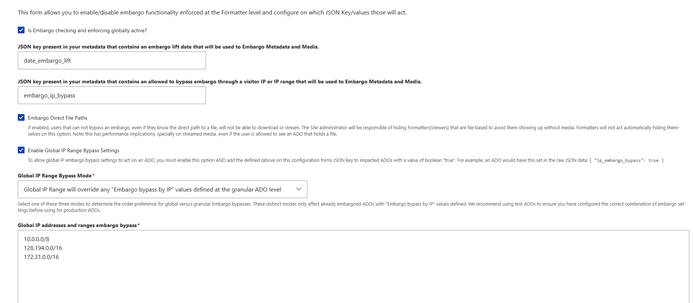

Restricting Access with IP Embargo¶
Archipelago can restrict an ADO’s media to visitors on a particular network range while leaving its metadata public to everyone. We use this for objects whose media lives in Avalon and is licensed for on-campus viewing only.
This uses Archipelago’s built-in metadata-driven embargo with the IP bypass option. No custom module is needed. See also the upstream Archipelago embargo documentation.
Note
The behavior described here was verified against the format_strawberryfield module source
(src/EmbargoResolver.php), which differs from the 1.6.0 documentation in a few places. Where
the two disagree, this page follows the source.
Warning
Embargo is not an access control list. An embargoed ADO is still a published node. Its page loads for everyone, it still appears in search and browse, and its metadata exports stay open. Only viewers and files are withheld. Read What IP Embargo Does Not Cover before promising a depositor that something is restricted.
How the Embargo Flag Works¶
Embargo settings name a single flat, top-level key in the ADO’s JSON. It is a plain key name, not a JMESPath expression, so it cannot point at a nested value.
The value stored under that key decides what happens, and its JSON type matters as much as its content:
Value under the key |
Effect |
|---|---|
Key is absent |
No embargo. The object is public. |
|
No embargo. The object is public. |
|
Embargoed. The visitor’s IP is checked against the site-wide bypass list. This is the shape TAMU uses. |
An array of ranges, e.g. |
Embargoed. The visitor’s IP is checked against that per-object list. |
Any string, including |
Embargoed for everyone, permanently, on campus included. Never do this. |
Why Strings Break Everything¶
A string value is passed straight to the IP matcher:
elseif (is_string($jsondata[$ip_embargo_key])) {
$ip_embargo = IpUtils::checkIp4($current_ip, trim($jsondata[$ip_embargo_key]));
$noembargo = $noembargo && $ip_embargo; // -> FALSE
}
checkIp4() cannot parse "T", "1", or a URL, so it returns false and the object is
embargoed. Nothing downstream can undo that, including a request from a campus address. This is why the
flag must be written as a bare 1 and never as a quoted string.
Why We Use a Boolean or Integer Flag¶
A true or 1 value skips the string branch entirely and is evaluated against the
site-wide list of campus ranges:
if ($this->embargoConfig->get('global_ip_bypass_enabled')) {
$global_ip_embargo = ((is_bool($v) && $v == TRUE) || $v == "1" || $v == 1);
if ($global_ip_embargo) {
$ip_embargo = $this->evaluateGlobalIPembargo($current_ip);
$noembargo = $noembargo && $ip_embargo;
}
Campus ranges then live in one configuration field instead of being copied into every object, which is what we want for a list that changes over time.
Two consequences of taking this branch:
Global IP Range Bypass Mode does not apply. The three-option dropdown (
replace/additive/local) is only reached when the ADO itself held real IP values. With a boolean or integer flag the mode is never read, so its value does not matter.The modes could only ever tighten access anyway. By the time they run, the local list has already been combined with
&&, so an “additive” list cannot widen access.
Flagging an Object During Ingest¶
The CSV Column¶
Add an embargo_ip_bypass column to the AMI spreadsheet:
1means campus only0or blank means public
The AMI Ingest Template¶
In twig/metadatadisplays/AMI_Ingest_JSON_Template.twig.html, the key is emitted after
related_url:
{# bare 1/null - do NOT use |json_encode|raw here like the keys around it. A quoted string is
passed to IpUtils::checkIp4(), fails to parse, and embargoes the object for everyone including
on campus. CSV column: 1 = campus only, 0 or blank = public. #}
"embargo_ip_bypass": {{ data.embargo_ip_bypass|default('')|trim == '1' ? '1' : 'null' }},
Warning
This line deliberately breaks the |json_encode|raw pattern used by every other key in that
template. “Fixing” it to match its neighbors produces a quoted string, which locks every flagged
object permanently. The comment above the line is there to stop exactly that.
When the Template Does Not Run¶
Some AMI sets are configured for direct column-to-key mapping. In those sets the ADO JSON keys are the
CSV column headers themselves, the Twig ingest template never runs, and raw cell values pass through
untouched. A T in the spreadsheet becomes the JSON string "T", which permanently
embargoes the object.
Before relying on the template, confirm which kind of set you are working with, and check the resulting
JSON of at least one object. AMI does coerce some types on the direct path (a date_issued of
1953 arrives as a JSON integer), which is another reason 1 rather than T or
true is the safest cell value.
Configuring Embargo in Drupal¶
The settings live at /admin/config/archipelago/metadatabased_Embargo. The form turns embargo
enforcement on at the formatter level and names the JSON keys it acts on:

Reading the form from top to bottom, these are the values the test site currently holds:
Field |
Value |
Why |
|---|---|---|
Is Embargo checking and enforcing globally active? |
Checked |
The master switch. Nothing below it is consulted while it is off. |
JSON key that contains an embargo lift date |
|
Named on the form, but date embargo is not part of this work. The key is inert unless an ADO actually carries it, in which case that object would be embargoed until the date passes. |
JSON key that contains an allowed to bypass embargo through a visitor IP or IP range |
|
The key this whole feature turns on. It must match the key in the ingest template character for character. |
Embargo Direct File Paths |
Checked |
The setting that actually refuses a download or stream to someone who knows the direct file path. The form notes it has performance implications for streamed media, and that hiding file-based viewers remains the site administrator’s job. |
Enable Global IP Range Bypass Settings |
Checked |
Without it, a boolean or integer flag is evaluated against nothing and the object stays public. |
Global IP Range Bypass Mode |
Global IP Range will override any granular ADO values |
A required field, but not read for boolean or integer flags. It only changes behavior for ADOs that carry IP values of their own. |
Global IP addresses and ranges embargo bypass |
Three ranges, described below |
The allow list. |
Warning
Note the key naming in the screenshot. The help text under Enable Global IP Range Bypass
Settings gives its example as { "ip_embargo_bypass": true }, the field above it is set to
embargo_ip_bypass, and the module’s own config schema defaults to ip_embargoed.
That is three different names for one key. Only the value typed into the field matters, and an ADO
whose JSON uses any other spelling is simply public. See Ways Embargo Silently Does Nothing.
The Campus IP Ranges¶
Global IP addresses and ranges embargo bypass takes one CIDR range per line. The test site currently holds:
10.0.0.0/8
128.194.0.0/16
172.31.0.0/16
Range |
What it is |
|---|---|
|
RFC 1918 private space. On our Kubernetes deployment this covers the cluster’s own pod and ingress addresses, including the |
|
The public Texas A&M campus range. This is the entry that does the intended work. |
|
RFC 1918 private space used for internal and VPN-style addressing. Also a testing entry rather than a public campus range. |
Warning
This list must not go to production as it stands. Two of its three ranges are private space, and
while the reverse proxy is still unconfigured, Drupal compares each request against the ingress
address rather than the visitor’s. That address falls inside 10.0.0.0/8, so every request
matches the bypass list and no object is restricted from anyone. The form reads as correctly
configured while enforcing nothing.
A production list should hold only public campus ranges, confirmed with network services, and should be set only once the reverse proxy work in Prerequisites for Production is done. Until then, treat the ranges above as scaffolding for testing.
At /admin/config/archipelago/metadataexpose, tick Return 401 in case of an Embargo on
iiifmanifest, iiifmanifestv2, iiifmanifest3cws, and
iiifmanifest3collection. Leave mods, dc, and geojson open so metadata
keeps exporting.
On the display mode formatters, tick Hide the Viewer in the presence of an Embargo. There is also an
embargo_json_key_source setting, which swaps in an alternate file set when an object is embargoed
(a placeholder image, for example) instead of hiding the viewer altogether.
Showing a Campus-Only Notice¶
Object_Description.twig.html and Object Display Clover.twig.html display a campus-only
notice gated on data_embargo.embargoed. In Object_Description, the notice sits above the
tab content, between </nav> and <div class="tab-content">, so it appears whichever tab is
active.
Both templates already carry this flag, which hides the downloads dropdown:
{% set file_download_restricted = false %}
{% if data_embargo.embargoed == true %}
{% set file_download_restricted = true %}
{% endif %}
Note
That flag only hides links. It does not block the URLs behind them. Refusing the download itself is the job of Embargo Direct File Paths in the Drupal settings above.
Roles That Bypass Embargo¶
EmbargoResolver.php short-circuits before any IP logic for:
the
administratorrole, which is never embargoed under any circumstancessee strawberryfield embargoed adossee strawberryfield time embargoed adossee strawberryfield IP embargoed ados
Warning
Always test logged out or in a private window. Testing as an administrator shows content unrestricted regardless of your IP, which looks identical to a broken embargo.
What IP Embargo Covers¶
The embargo resolver is consulted by:
IiifBinaryController, for direct file downloads, but only when Embargo Direct File Paths is onMetadataExposeDisplayController, for the/do/…endpoints, but only where Return 401 in case of an Embargo is ticked for that expose configMetadataAPIControllerandMetadataDisplaySearchControllerthe field formatters for Video, Audio, Image, Media, PDF, Paged, Mirador, Universal Viewer, 3D, Map, WARC, Pannellum, Citation, and MetadataTwig
the
ADOAccessViews argument validator, which is opt-in
What IP Embargo Does Not Cover¶
Gap |
Detail |
|---|---|
Search index |
The module feeding Solr has no embargo awareness. |
IIIF Content Search |
|
Cantaloupe |
If the IIIF image server sits on a public hostname, tiles can be fetched directly from it. |
Metadata exports |
|
Node access |
Not ACL. The object page still loads for everyone. |
IPv6 |
The matcher is |
Reverse proxy |
|
Page cache |
Disabled for anonymous visitors on any object carrying the embargo key. |
Note
The search gap and the ingest decision compound each other. If an ADO carries a text derivative, such as an HTML capture of the Avalon page it was built from, that text is indexed and searchable even while the object is embargoed. Where the media itself is restricted, the safer choice is not to ingest derivatives of it at all rather than to ingest them and rely on embargo.
Ways Embargo Silently Does Nothing¶
Three misconfigurations fail open, with no error and no log entry, so the site looks exactly like a correctly configured one that happens to have nothing restricted:
The key name does not match. The upstream example uses
embargo_ip_bypasswhile the module’s config schema defaults toip_embargoed. If the settings string and the JSON key differ by a single character, every object is public.Enable Global IP Range Bypass Settings is unticked. A boolean
truethen matches neither the array branch nor the string branch, nothing is evaluated, and the object is public.The value is falsy.
false,0,"", or a blank cell all read as “no embargo”.
One misconfiguration fails closed: any non-IP string locks the object to everyone, as described in How the Embargo Flag Works.
Testing an Embargoed Object¶
Log out, or use a private window. An administrator bypasses everything.
Confirm the ADO JSON contains
"embargo_ip_bypass": 1, unquoted.Set the global bypass addresses to
192.0.2.0/24, a range that matches nobody. Expect the campus-only notice, a hidden viewer, and a 401 from/do/{uuid}/metadata/iiifmanifest/default.jsonld.Replace it with the address Drupal actually sees for your client, clear caches, and confirm everything renders normally.
Confirm that a control object without the flag is unaffected in both states.
Confirm that a direct
/do/{node}/file/{uuid}/download/{name}URL returns 403 while embargoed. This requires Embargo Direct File Paths.
Note
Metadata stays visible in every restricted case. That is by design, not a failed test. The 401 on the manifest is the cleanest pass or fail signal.
Troubleshooting¶
Nothing appears restricted. You are probably logged in as an administrator. Retest in a private window before changing any configuration.
An object is restricted even on campus. Check the ADO JSON for a quoted value. A string of any kind embargoes the object for everyone.
Do not draw conclusions while
10.0.0.0/8is in the bypass list. Campus WiFi NAT and container networks live in that range, so it matches the very addresses you are trying to test against, including the cluster’s own ingress. Remove it, or use192.0.2.0/24, the RFC 5737 documentation range, when you want a list that matches nobody. See The Campus IP Ranges.Find the IP Drupal is comparing against. Go to
/admin/reports/dblog, open any entry, and read Hostname. On our test site this showed10.244.217.104, a Kubernetes pod address, meaning every request looked identical because Drupal was seeing the ingress rather than the visitor.Never put the proxy address in the bypass list. Since every request appears to come from it, doing so grants campus access to the entire internet while looking like the feature works.
An object display template will not render on a test site. Check for Twig extensions the test site does not have. A missing function, such as
allmaps_annotation_url, is a compile-time error that fails the whole template and cannot be guarded with{% if %}; set the value tonullfor testing instead. A missingattach_library()target, such asstrawberryfield_clover, is only a warning: the page renders and the Clover JS does not initialize, which is harmless for embargo testing.
Prerequisites for Production¶
These items are still open, and IP embargo cannot be trusted in production until they are resolved:
Reverse proxy.
$settings['reverse_proxy']and$settings['reverse_proxy_addresses']must be set insettings.php, and the ingress must forwardX-Forwarded-For. Until the dblog Hostname shows real client addresses, no IP rule can work.The campus CIDR list. Available from network services, or from the EZproxy and e-resources configuration, which usually maintains one already for vendor licensing. Decide explicitly whether VPN, branch campuses, and residence halls count as on campus.
IPv6. Confirm that campus clients present IPv4 addresses. If they do not, this feature cannot work as designed.
How Avalon itself restricts the item. If Avalon’s restriction is login-based rather than IP-based, mirroring it as an IP rule is wrong in both directions.
Whether restricted items should be ingested at all. Not ingesting a poster image and page capture is simpler and safer than ingesting them and then relying on embargo.
Checking Avalon’s Access State¶
Avalon exposes an item’s access state in two ways:
The HTTP status of its manifest.
GET /media_objects/<id>/manifest.jsonreturns401when restricted and200when public. This is only meaningful when requested from outside the allowed audience.The
Access Restrictionsentry inside the manifest metadata, for example"This item is accessible by: the public."This is authoritative, but only readable once you already have access.
A reliable rule is that 401 means restricted, and for 200 you read the
Access Restrictions value. Verified samples: 4b29b606w returns 200 and is public, while
41687h652 returns 401 and is restricted.
Warning
Twig cannot perform this check. No registered Archipelago Twig extension makes HTTP requests, so any manifest-based determination has to happen before ingest, while the spreadsheet is being prepared.